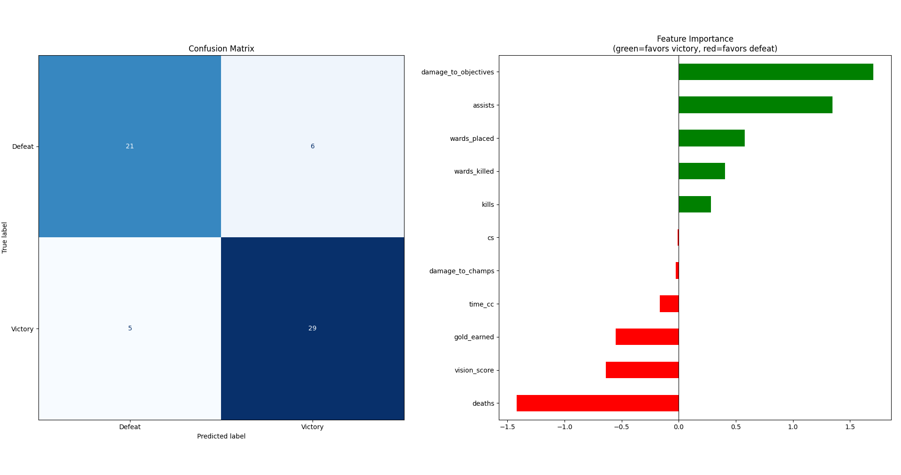
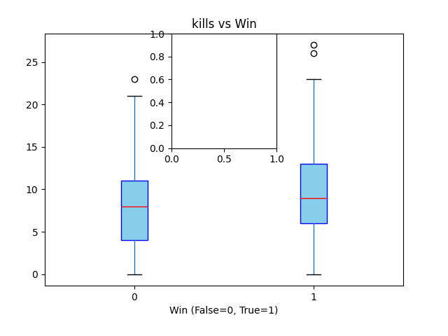
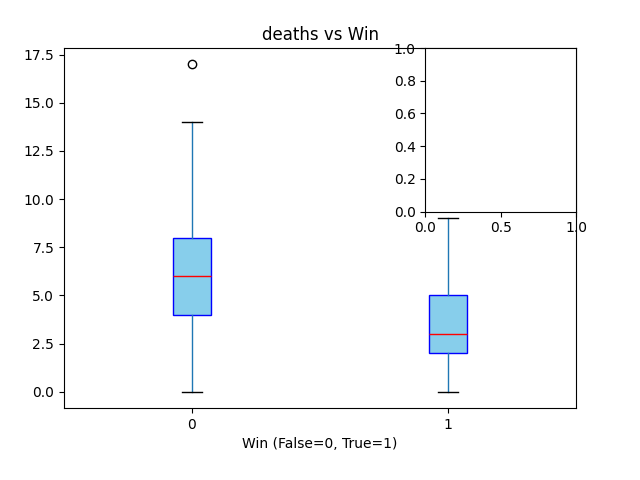
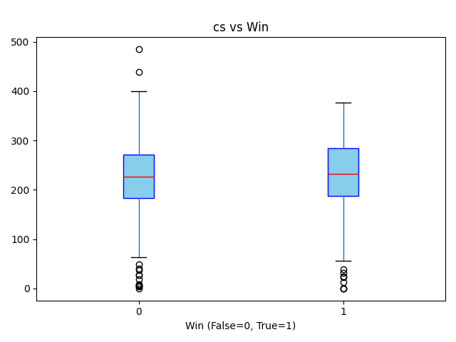
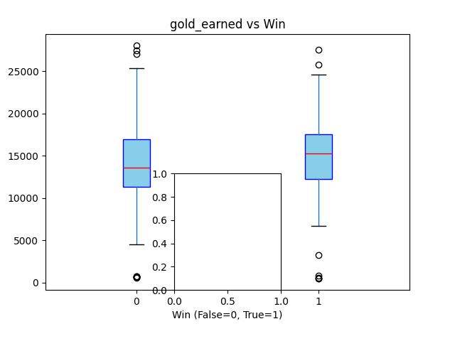

Data analysis on ranked matches: which factors lead to victory?
This project analyzes ranked match data to identify which performance metrics most strongly influence game outcomes. Data is collected using Python (Riot Games API requests), stored in MySQL, and later processed for analysis and visualization.
Key variables include Kills, Deaths, Assists, CS, and Gold Earned. The objective is to translate in-game performance indicators into a data-driven attribution framework, highlighting which factors contribute most significantly to winning matches.
Screenshot of the raw data stored in MySQL.





The boxplots above show how key metrics (Kills, Deaths, Assists, CS, Gold) differ between winning and losing matches.
Correlation with Victory
Pearson coefficient — positive = win factor, negative = loss factor
Avg Kills · Win vs Loss
Avg Deaths · Win vs Loss
The analysis reveals that commonly assumed performance indicators do not always translate into victory. Kills and CS (creep score), often perceived as primary success metrics, show surprisingly weak predictive power.
Instead, the strongest predictors of victory are damage to objectives and assists — both inherently team-oriented metrics — suggesting that coordinated, objective-focused play outweighs individual performance. On the negative side, deaths is the single most significant factor associated with defeat, more so than any offensive metric.
This mirrors a fundamental principle applicable beyond gaming: individual output metrics (kills, CS) are less reliable performance indicators than process and collaboration metrics (objectives, assists). A framework built around the right KPIs leads to better outcomes than one optimized for vanity metrics.
This project demonstrates how performance drivers can be identified through structured data analysis. By comparing winning and losing outcomes, it is possible to isolate high-impact variables and reduce noise.
The same analytical framework can be applied in business environments:
{kind=link}
{kind=link}